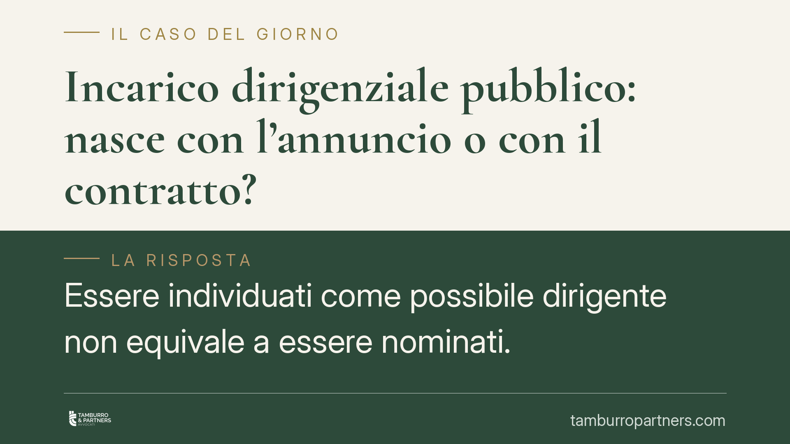

Incarico dirigenziale pubblico: nasce con l'annuncio o con il contratto?
Essere individuati come possibile dirigente non equivale a essere nominati. Nel pubblico impiego privatizzato l'incarico sorge solo con l'atto formale di conferimento e la stipula del contratto individuale scritto. Fino a quel momento l'Amministrazione può ancora rivalutare la scelta, purché rispetti correttezza e buona fede. Un principio che incide su affidamento del candidato e possibili responsabilità precontrattuali.

Il nodo giuridico
La domanda è ricorrente nei concorsi e nelle procedure comparative per incarichi dirigenziali pubblici: da quale momento il candidato può dirsi titolare del rapporto? Basta l'esito favorevole della selezione, l'individuazione come candidato preferito, la comunicazione informale? Oppure occorre attendere il perfezionamento formale dell'incarico?
La distinzione non è formalistica. Da essa dipendono diritti retributivi, aspettative tutelabili e, soprattutto, la possibilità per l'Amministrazione di tornare sui propri passi.
Inquadramento normativo
Nel lavoro pubblico privatizzato il conferimento degli incarichi dirigenziali è disciplinato dall'art. 19 del D.Lgs. 165/2001. La norma prevede una sequenza precisa: individuazione del dirigente, adozione del provvedimento di conferimento e definizione, con contratto individuale scritto, dell'oggetto dell'incarico, degli obiettivi e del trattamento economico. La responsabilità dirigenziale trova invece la sua disciplina nell'art. 21 dello stesso decreto.
Da questa architettura discende un principio chiaro: l'individuazione non equivale alla nomina. L'incarico si costituisce solo con il conferimento formale accompagnato dalla stipula del contratto. Prima di tale momento non esiste ancora un rapporto perfezionato, ma una fase procedimentale ancora aperta.
Ciò non significa che l'Amministrazione sia libera di comportarsi in modo arbitrario. Nella fase che precede il perfezionamento operano i doveri di correttezza e buona fede sanciti dagli artt. 1175, 1337 e 1375 c.c.: la buona fede nell'adempimento, il dovere di comportarsi correttamente nelle trattative e nella formazione del contratto. È su questi presidi civilistici — non sulla L. 241/1990, che disciplina il procedimento amministrativo in senso proprio — che si fonda la tutela dell'affidamento del candidato.
> Nota interna redazionale: gli estremi della pronuncia citata dalla fonte (numero e anno) presentano anomalie cronologiche e vanno confermati con la banca dati ufficiale prima della pubblicazione. In assenza di verifica, l'articolo espone l'orientamento consolidato senza attribuire il principio a una specifica sentenza.
Cosa cambia per il candidato
L'orientamento della giurisprudenza di legittimità conferma che, fino al perfezionamento, l'Amministrazione conserva un margine di rivalutazione. Può cioè riconsiderare la scelta operata, senza che il candidato individuato possa vantare un diritto già acquisito all'incarico.
Questo margine, tuttavia, non è illimitato. Se la scelta viene ribaltata in modo ingiustificato, dopo aver ingenerato un ragionevole affidamento, può configurarsi una responsabilità precontrattuale. Il candidato non ottiene l'incarico, ma può agire per il ristoro del danno da lesione dell'affidamento: le occasioni perse, le spese sostenute, le scelte compiute confidando in una nomina apparentemente sicura.
È la classica tutela dell'interesse negativo: non il beneficio che si sarebbe ricavato dall'incarico, ma il pregiudizio patito per aver riposto fiducia in una trattativa poi interrotta scorrettamente.
Per l'Amministrazione, il messaggio è speculare: la facoltà di rivalutare va esercitata con trasparenza e motivazione. Comunicazioni ambigue o comportamenti che alimentano aspettative concrete possono trasformarsi in fonte di responsabilità.
Cosa fare in concreto
- Distinguere individuazione e nomina. Verificare sempre se è stato adottato l'atto formale di conferimento e stipulato il contratto individuale scritto: senza questi passaggi l'incarico non è ancora sorto.
- Conservare ogni comunicazione. Email, verbali, note informali: sono elementi decisivi per dimostrare l'affidamento ingenerato e la scorrettezza dell'eventuale ripensamento.
- Non anticipare scelte irreversibili. Prima del perfezionamento, evitare dimissioni o impegni economici fondati sulla sola individuazione.
- Valutare tempestivamente la posizione. In caso di revoca o mancata nomina, verificare i presupposti di una responsabilità precontrattuale entro i termini utili.
- Per le Amministrazioni: motivare la rivalutazione. Documentare le ragioni del ripensamento riduce sensibilmente il rischio di contenzioso.
Consigliamo di esaminare con attenzione la sequenza formale della procedura: è lì, e non nell'annuncio, che si colloca la nascita del rapporto.
Conclusione
Il principio resta netto: nel pubblico impiego privatizzato l'incarico dirigenziale nasce con il contratto, non con l'annuncio. Ma la libertà di rivalutazione dell'Amministrazione incontra il limite della buona fede. Chi confida in una nomina non ancora perfezionata deve conoscere sia i propri limiti sia le proprie tutele.
---
*Contributo informativo a cura di Tamburro & Partners - Avv. Giuseppe Tamburro. Non costituisce parere legale.*
Ogni storia di lavoro ha i suoi tempi.
Se gestisci HR e vuoi un confronto su contenzioso, ispezioni o licenziamenti, scrivi allo studio. Ti rispondiamo entro un giorno lavorativo.